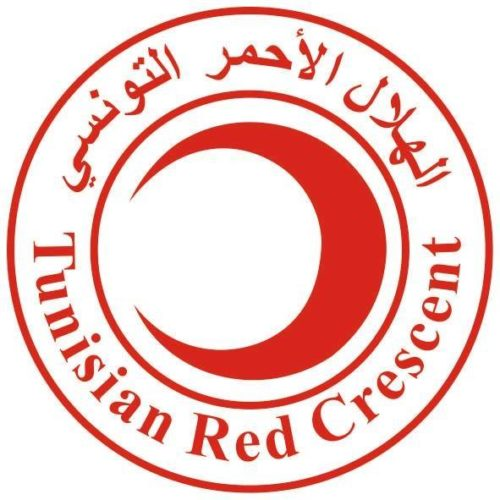

I am Asma,
a passionate web developer & creative problem solver,
crafting digital experiences
from Tunisia.
About
As a dedicated web development engineer, I thrive on building innovative and user-friendly digital solutions. With a focus on mastering technologies like Angular, React, Node.js, and Spring, I am always pushing the boundaries of what's possible. I also have a growing interest in DevOps, aiming to streamline workflows and improve deployment efficiency. I am passionate about continuously learning and delivering high-quality code that enhances online experiences
Download CVExpertise
- Frontend: Angular, React.js, Tailwind CSS, Bootstrap
- Backend: Node.js, Spring
- DevOps: Docker, Jenkins
Experience
IPACT Consult
Full Stack Developer
June 2024 – August 2024
- Played a key role in the planning and implementation of security and safety dashboards.
- Developed a real-time incident reporting and tracking system.
- Managed access logs and patrol routes, ensuring enhanced organizational security.
- Assisted in evaluating compliance with safety regulations and drafting audit reports.
- Contributed to corrective action tracking and emergency policy implementation.
Angular-Spring Project
Academic Project
- Developed a web application to improve student life by managing dormitories, restaurants, libraries, and campus services.
- Applied modern frontend and backend frameworks to create efficient, user-friendly services.
React-Node.js Project
Academic Project
- Contributed to the development of an innovative web application for launching data science competitions.
- Enabled companies to host competitions, giving talent the opportunity to participate and win.
- Utilized modern frontend and backend technologies to deliver a seamless user experience.
Education
Esprit School of Engineering
Engineering Cycle (Web Development)
2022 – Present
Institut Préparatoire Aux Études d'Ingénieurs de Bizerte
Preparatory Cycle in Physics and Chemistry
2019 – 2022
Lycée Technique Ibn Sina Kébili
Baccalauréat in Experimental Sciences
2019
Extracurricular Activities
Here are some of my recent extracurricular activities that showcase my diverse skills and interests. Feel free to explore!
-
Designercreation of a perfume catalog, including the design of business cards and social media posts. This experience enhanced my skills in graphic design and visual marketing.
-
Social Media ManagerI managed and created posts and videos for a perfume project. This taught me how to effectively promote products and engage with an online community.
-
 Small Business Owner - “Little SimSim”I founded a small handmade accessories business, which helped me develop skills in entrepreneurship, project management, and marketing.
Small Business Owner - “Little SimSim”I founded a small handmade accessories business, which helped me develop skills in entrepreneurship, project management, and marketing. -
Member of Croissant Rouge Kebili:Involved in volunteer activities and humanitarian actions.
Mesk L'art Du Parfum
I designed a catalogue for a perfume shop that showcases each fragrance along with its unique notes: top notes, heart notes, and base notes. This project not only enhanced my graphic design skills but also deepened my understanding of fragrance composition and marketing strategies.
- Catalogue
Croissant Rouge Kebili
As a member of Croissant Rouge Kebili, I actively participated in various volunteer activities and humanitarian initiatives. This experience allowed me to engage with the community, provide support to those in need, and collaborate with like-minded individuals dedicated to making a positive impact. Through this involvement, I developed valuable skills in teamwork, communication, and empathy.
- Club
Mesk L'art Du Parfum
I managed the social media presence for the project 'Mesk L'Art du Parfum,' where I created engaging posts, videos, and stories to promote the brand. This experience allowed me to develop my content creation skills and learn how to effectively engage with the audience, showcasing the artistry and uniqueness of each fragrance
- Social Media
.png)
Little SimSim
"I launched a small handmade accessories business, which allowed me to gain skills in entrepreneurship, project management, and marketing."
- Business
Croissant Rouge Kebili
As a member of Croissant Rouge Kebili, I actively participated in various volunteer activities and humanitarian initiatives. This experience allowed me to engage with the community, provide support to those in need, and collaborate with like-minded individuals dedicated to making a positive impact. Through this involvement, I developed valuable skills in teamwork, communication, and empathy.
- Club
Croissant Rouge Kebili
As a member of Croissant Rouge Kebili, I actively participated in various volunteer activities and humanitarian initiatives. This experience allowed me to engage with the community, provide support to those in need, and collaborate with like-minded individuals dedicated to making a positive impact. Through this involvement, I developed valuable skills in teamwork, communication, and empathy.
- Club
Get In Touch
I’m eager to explore new opportunities! Whether you have an internship, job opening, or freelance project in design, tech, or art, I’d love to hear from you. Please feel free to reach out!